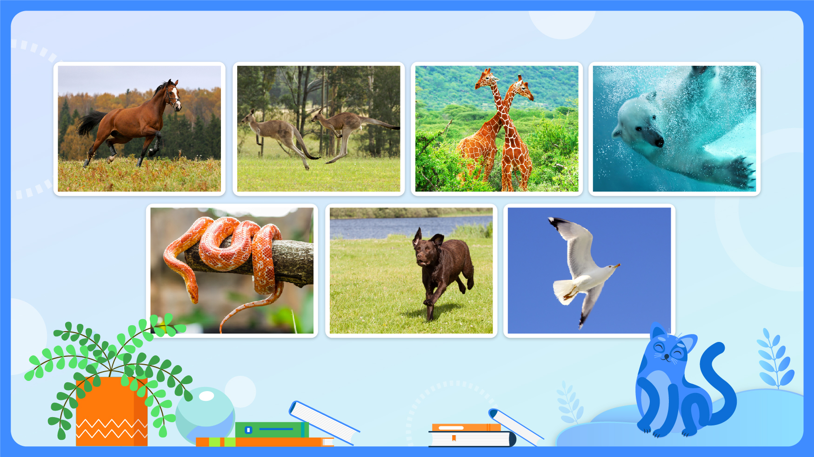

×

Интерактивная презентация к уроку биологии
Мир живой природы находится в непрерывном движении. Даже в организмах внешне неподвижных живых существ происходит постоянное движение. Движутся соки в растениях, перетекает цитоплазма в растительных и животных клетках, циркулирует межклеточная жидкость. Что уж говорить о свободно движущихся организмах! Двигаются бактерии и простейшие в капле воды. Идут стада животных, летят стаи птиц. А чем является движение с биологической точки зрения?

Органы опоры и движения у животных разнообразны и определяются образом жизни и средой обитания.
Простейшие одноклеточные организмы, такие как амеба и инфузория-туфелька, передвигаются с помощью ложноножек и ресничек. Кишечнополостные животные (например, гидра) перемещаются, используя щупальца и сокращения мышц тела. Черви передвигаются благодаря попеременному сокращению и расслаблению кольцевых и продольных мышц и наличию щетинок на сегментах тела. Членистоногие, например крабы, используют ходильные ноги и клешни. Насекомые, такие как майский жук, летают с помощью крыльев и ног. Земноводные и пресмыкающиеся при перемещении используют задние конечности и хвост. Птицы и млекопитающие для полета и передвижения пользуются крыльями и ногами. Рыбы перемещаются с помощью хвоста и плавников.
Скелет является важным компонентом опоры и движения и делится на два основных типа:
Позвоночным животным и человеку присущ внутренний скелет ⓘ. У акул и скатов он хрящевой, у высших рыб и других позвоночных — костный. В скелете человека около двухсот костей, число которых меняется в разные периоды роста из-за срастания и разъединения костей. Скелет наземных животных поддерживает тело над землей, служит основой для прикрепления мышц, связок и сухожилий, позволяя двигаться.
Амебы и эвглены ⓘ передвигаются, сокращая микротрубочки и двигаясь благодаря цитоплазме. Амеба образует ложноножки, изменяя нити цитоскелета. Эвглена зеленая передвигается в воде, используя жгутик. Некоторые виды эвглен способны к волнообразным движениям тела. Инфузории перемещаются за счет биения ресничек. У гидры эпителиально-мускульные клетки расположены параллельно вдоль оси. У медуз они находятся по краю зонтика радиально и по кругу. Гидра медленно перемещается, переступая подошвой и щупальцами. Медузы двигаются реактивно, выталкивая воду из-под купола при сокращении стенок зонтика.
Дождевой червь ⓘ — самый прогрессивный представитель червей — передвигается ползком, втягивает передний конец тела, цепляется щетинками за неровности почвы, а затем, сокращая мышцы, подтягивает задний конец тела. При сокращении продольных мышц тело становится короче и толще, при сокращении кольцевых — длиннее и тоньше. Сокращаясь поочередно, оба слоя мышц обеспечивают движение червя.
Брюхоногие моллюски ⓘ (улитки, слизни) имеют туловище, голову и ногу, занимающую всю брюшную сторону тела. Передвигаются они, скользя подошвой ноги по водным предметам. Двустворчатые моллюски (устрицы, мидии) имеют овальную раковину из двух створок, соединенных на брюшной стороне мускулистой ной, направленной вперед. Они передвигаются, закрепляя ногу в грунте и подтягивая ее, делая небольшие шаги и проходя всего 20–30 см/ч. Головоногие моллюски (осьминоги, каракатицы) имеют мешкообразное тело, большую голову, 8–10 длинных ног или щупалец и быстро передвигаются до 70 км/ч, используя реактивный способ перемещения.
Членистоногие ⓘ передвигаются с помощью конечностей, крыльев и плавников, используя поперечнополосатую мускулатуру. Ракообразные двигаются по дну головой вперед на ходильных ногах, способ передвижения — плавание. У паукообразных от головогруди отходят 8 ходильных ног, с помощью которых они перемещаются ходьбой или прыжками. Тело насекомых состоит из головы, груди и брюшка с тремя парами ног, у некоторых есть крылья. Способ передвижения — ходьба, прыжки или полет.
Рыбы и земноводные ⓘ Рыбы плавают, изгибая тело в горизонтальной плоскости. После выхода на сушу главным органом локомоции стали конечности. Бесхвостые амфибии (лягушки, жабы) передвигаются по суше прыжками: задние конечности длинные и сильные, передние короткие. Плавают лягушки, используя задние конечности, передние конечности и голова служат рулем. Хвостатые амфибии (тритоны) имеют парные конечности для ходьбы и длинный хвост для плавания. Безногие амфибии (червяги) передвигаются на суше и в воде, изгибаясь всем телом, подобно змее. Личинки амфибий (головастики) в воде движутся как рыбы.
Пресмыкающиеся ⓘ — это первые животные, полностью приспособившиеся к сухопутному образу жизни. Их эволюция шла в сторону увеличения подвижности и маневренности. Исходное строение скелета пресмыкающихся — четырехногое с короткими, расставленными по бокам тела конечностями. Для движения по сыпучему грунту у них появились роговые пластинки на пальцах и уплощение тела. Ускорение передвижения по суше достигалось изменением постановки конечностей (перенос под туловище), увеличением размеров и изменением позы (крокодилы, бегущие галопом со скоростью до 12 км/ч). При ползании конечности утрачивались. Змеевидное тело эффективно и в воде. Крокодилы для плавания уплощают тело и хвост, приобретают перепонки между пальцами. У черепах переход к водному образу жизни сопровождался уплощением панциря и превращением конечностей в ласты. Птицы хорошо передвигаются по земле, лазают по деревьям и скалам, плавают и ныряют.
Характерный способ передвижения большинства птиц — это полет ⓘ. Нелетающие виды (страусы, киви, пингвины) утратили эту способность вторично и приспособились к бегу или плаванию (крылья пингвинов превратились в ласты). Выделяют два основных типа полета: машущий (активный, с частыми взмахами, как у колибри — до 80 в секунду) и парящий (пассивный, с использованием восходящих потоков воздуха, как у орлов и соколов). Для движения в воде водоплавающие птицы используют задние лапы с плавательными перепонками.
Все млекопитающие ⓘ обладают общим механизмом передвижения, но развивались по разным направлениям в зависимости от среды обитания. Их эволюция шла на удлинение и выпрямление ног, а также поднятие туловища над землей для скорости. Современные звери умеют рыть (кроты с мощными передними лапами), ходить и бегать (лошади, олени со стержневидными ногами; кошки и собаки с удлиненными пальцами), прыгать (кенгуру, тушканчики с длинными задними ногами), планировать и летать (рукокрылые с летательной перепонкой), а также плавать (китообразные, сирены с рыбообразной формой тела и ластами).
Усовершенствование и усложнение организации животных в ходе исторического развития отразилось и на строении опорной системы.
Движение — одно из главных свойств организмов.